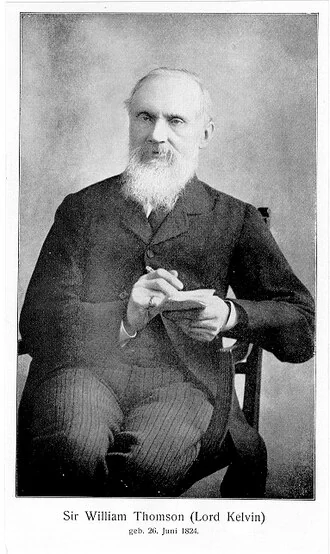
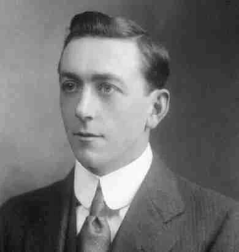
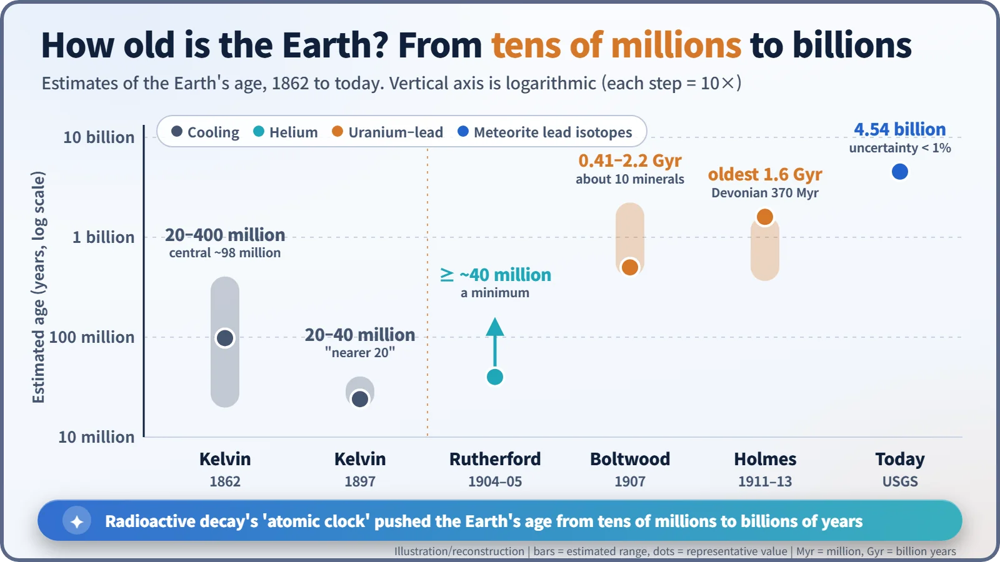
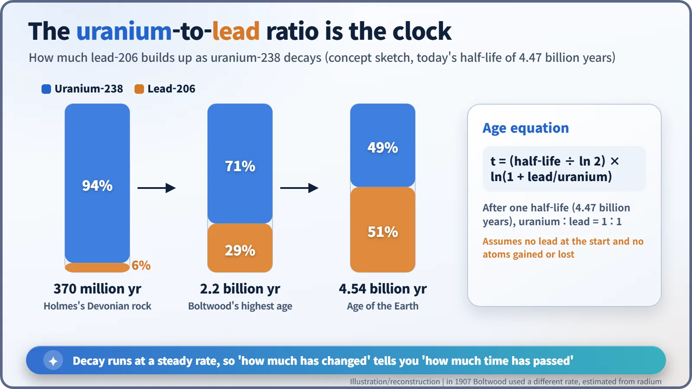

Nuclear History · 025
The Hourglass Inside a Pebble — Boltwood, Holmes and the Birth of Radiometric Dating
Kelvin gave the Earth tens of millions of years; then the lead hidden in uranium minerals started counting in billions.
In 1862 Lord Kelvin calculated from the cooling of the Earth that our planet was 20 to 400 million years old, and later narrowed it to 20 to 40 million. After radioactivity was discovered, Ernest Rutherford suggested that decay could date rocks, Bertram Boltwood turned the lead-to-uranium ratio into a clock in 1907, and Arthur Holmes began putting dates on geological time in 1911. Today the Earth's age is put at 4.54 billion years.
A pebble that claimed to be 2.2 billion years old
In the collections of Yale's Peabody Museum of Natural History sit a few dark fragments of a mineral called thorianite, from Ceylon (today's Sri Lanka). In 1907 the chemist Bertram Boltwood (1870–1927) measured the uranium and lead inside this kind of stone and wrote down an astonishing number: 2.2 billion years. At a time when many scientists put the age of the entire Earth at somewhere between 20 million and 100 million years, a single pebble was claiming to be more than twenty times older. [4]
How can a rock tell you its age? And was the number right?
Kelvin's thermometer versus Darwin's timetable
In April 1862 William Thomson (1824–1907), Britain's leading physicist and later Lord Kelvin, treated the Earth like a cooling cannonball. Starting from a molten globe, he used the laws of heat conduction to work out how long it would take to cool to its present state, in which rocks get hotter the deeper you dig. His answer: 20 million to 400 million years, with a central value of roughly 98 million. [6]
Geologists and evolutionists found that uncomfortably short. In the first edition of On the Origin of Species (1859), Charles Darwin had estimated that the erosion of one landscape in southern England alone had taken about 300 million years. Kelvin did not budge. In 1897 he narrowed his range to 20–40 million years, adding that the true figure was "probably much nearer 20 than 40." [6]

The moment the old man woke up
The twist came from an unexpected direction. In 1903 Pierre Curie and Albert Laborde reported that radium gives off heat continuously, all by itself. On 20 May 1904 Ernest Rutherford (1871–1937), the leading figure in radioactivity research, lectured at the Royal Institution in London, and in the audience sat the 80-year-old Kelvin. [5]
According to Rutherford's own recollection, recorded decades later, Kelvin dozed off but opened an eye just as the talk reached the age of the Earth. Rutherford, thinking fast, pointed out that Kelvin had limited the Earth's age "provided no new source [of heat] was discovered", and radium was exactly such a source. "Behold! the old boy beamed upon me." Because this story was told long after the event, its wording varies from one version to the next. [6]
Rutherford had a more important idea, too. Radioactive elements decay at a fixed rate, so if you measure how much of their products has built up, you can work out a rock's age. Using the helium trapped in a uranium mineral, he got about 40 million years. Helium is a gas and leaks away, though, so this could only be a minimum.
Boltwood finds a clock in lead
At Yale, Boltwood looked at a different product. Uranium minerals always contain lead, and the older the rock layer, the more lead they hold. If lead is the final stop of uranium's decay chain, then the ratio of lead to uranium is a clock, and unlike helium, lead does not escape.
In a 1907 paper in the American Journal of Science he picked about 20 minerals from around the world and assigned ages to 10 of them (sources give slightly different sample counts). The results ranged from 410 million to 2.2 billion years. Because nobody had measured uranium's decay rate directly, he estimated it from the better-known decay rate of radium. [1] [4]

A 21-year-old student puts dates on geological time
The person who carried Boltwood's method into geology was Arthur Holmes (1890–1965), then an undergraduate at Imperial College London. In a 1911 paper in the Proceedings of the Royal Society, he dated a Devonian rock from Norway at 370 million years, and his oldest sample came out at about 1.6 billion. Geological periods, until then ordered only by their fossils, were starting to get dates in years. In 1913 Holmes published The Age of the Earth, arguing that radioactive methods deserved more trust than cooling calculations. [2]


How the atomic clock ticks
The principle works like an hourglass. Uranium-238 has a half-life of about 4.47 billion years: after that time, half of the original amount has turned, through a chain of steps, into lead-206. That rate is essentially unaffected by temperature or pressure. So measure the lead-to-uranium ratio and you can count time backwards. A ratio of 1:1 means one half-life has passed.

The early numbers were rough, of course. The idea that one element can come in different weights, isotopes, was only worked out in 1913, so there was no way to tell lead that was in the mineral from the start, or lead made by thorium, from lead made by uranium. Seen today, Boltwood's 2.2 billion years was an overestimate.
Did radioactivity really defeat Kelvin?
The popular story says "radioactivity proved Kelvin wrong", but that is only half true. Adding all of the Earth's radioactive heat would have stretched Kelvin's answer by perhaps a factor of two. His bigger mistake, historians now argue, was ignoring that the Earth's interior can carry heat by convection. Kelvin's former student John Perry had already made that point in the 1890s, before radioactivity was known. What radioactivity really changed was not the heat budget but the clock. [5]
Holmes refined his numbers for the rest of his career, reaching about 4.5 billion years in the 1940s. Today the US Geological Survey gives the age of the Earth as 4.54 billion years, from meteorites and lead isotopes, with an uncertainty of less than 1 percent. The hourglass inside a pebble had found the Earth's birthday. [3]